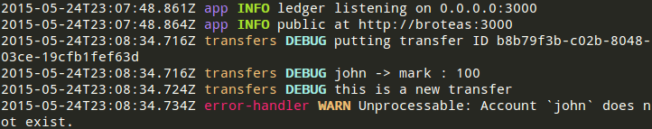

Five Bells Shared 


Shared module among Five Bells Node.js apps
Installation
npm install --save five-bells-shared
Schema Validator
This module contains a schema validator.
Log Service
The log service uses mag and a custom formatter to generate pretty logs like this:

Usage
Set up the logger somewhere in your top-level app:
const hub = require('mag-hub')
const mag = require('mag')
const log = require('five-bells-shared/lib/log')
module.exports = log(mag, hub)
Then use it from anywhere using require('mag'):
const log = require('mag')('transfers')
log.debug('very boring information')
log.info('somewhat useful information')
log.warn('sort of important information')
log.error('super-important information')
Caveat
If you're using mag in a module which is npm linked, it will receive its own instance of mag and messages will not be formatted correctly. To solve this problem, you can install the mag module globally and link it in all of your local modules:
sudo npm install -g mag
npm link mag # in each module directory
Log Test Helper
The log helper is useful in tests to mute the log output of tests and print it if the test fails.
Usage
const logHelper = require('five-bells-shared/testHelpers/log');
describe('Transfers', function () {
logHelper();
// ...
});